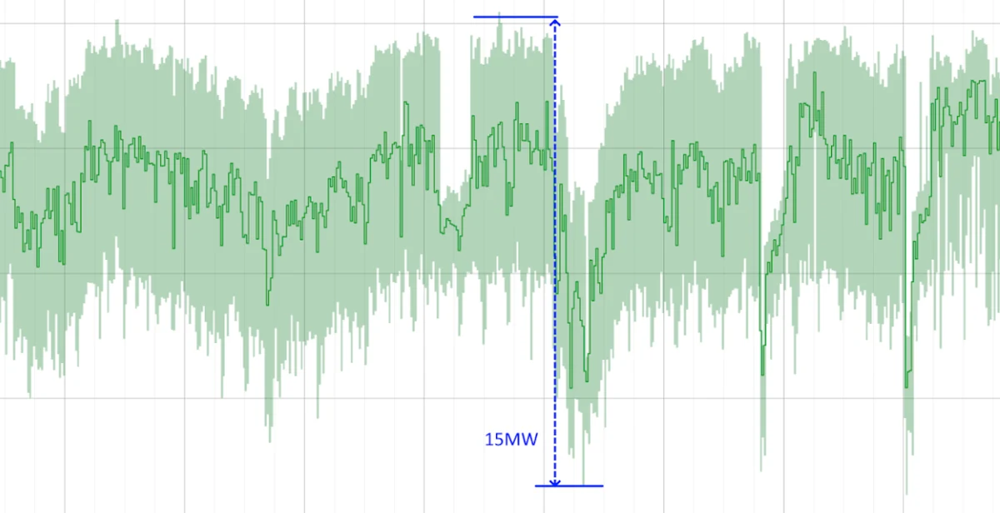
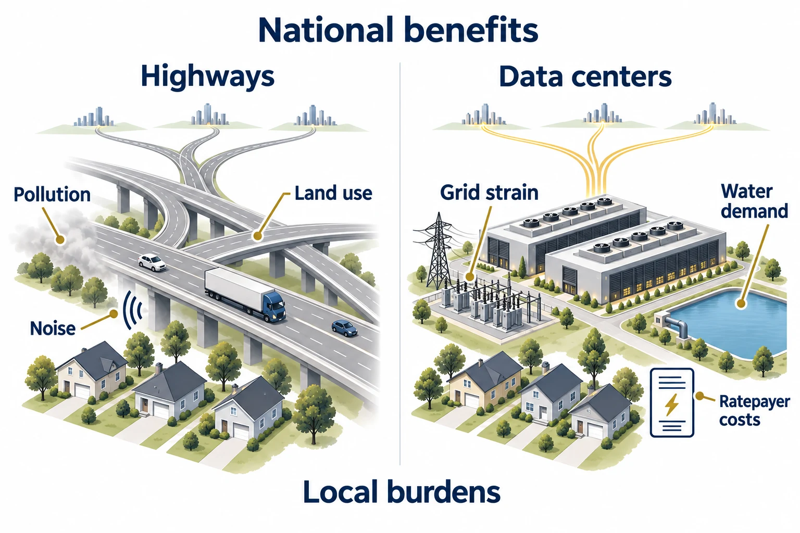

Speed
Development moves much faster than regulation, infrastructure planning, and upgrades. A site can seek service before the grid or permitting process is ready to accommodate it.
Technology policy / Electricity / Water / Communities
Regulatory challenges, technical constraints,
and policy responses across states.
How can states turn growing digital infrastructure into a public asset while accounting for the costs borne by its neighbors?
01 / Challenges & opportunities
Datacenters combine dense computing equipment with power conversion, backup generation, and cooling. Their growth creates demands on electricity and water systems that outlast any single generation of hardware.
Development moves much faster than regulation, infrastructure planning, and upgrades. A site can seek service before the grid or permitting process is ready to accommodate it.
The number of proposed sites and their sizes continually change the landscape. Utilities must plan for large additions while distinguishing credible demand from proposals that may never materialize.
Buildings endure, but compute, power, and cooling hardware change. A facility’s energy demand, load shape, or cooling requirements can evolve within the same physical footprint.
Power, water, land use, emissions, and community effects demand decisions across different policy areas. A choice that eases one constraint can increase pressure on another.
Shift suitable computing tasks across time and locations to ease grid constraints through demand response and make better use of available clean power. The useful amount depends on the workload and service commitments.
Onsite generation and energy storage can reduce demand on the grid or become grid assets. Coordination and environmental limits determine whether those resources can help during a system emergency.
Choose locations that work for both the operator and the community. Electricity availability, water conditions, and local impacts can enter the decision before a project creates long-term commitments.
Fund new clean generation, grid upgrades, water infrastructure, and community benefits through specific, long-term commitments. The terms determine which costs the project carries.
Operators have unusual control over where and when they compute, and how they power and cool it.
Why the physical constraints matter
Datacenter growth requires expansion of power generation and delivery capacity. Large, fast changes in AI workload demand also pose an operational problem for grid stability.
Cooling links electricity and water. Water-saving choices can increase electric demand, while water-intensive cooling can place pressure on an already stressed basin. Regulation needs both the scale of consumption and the local context.

02 / Scope & method
The study focuses on state-level legislation because states have broad control over utilities, resources, and tax incentives, and can offer transferable regulatory models.
Land use, local water, noise, property taxes, and community impacts.
Utility regulation and costs, water policy, and incentives. These tools connect project decisions to system-wide obligations.
Transmission, wholesale markets, environmental rules, and reliability requirements.
The cases examine concrete regulatory mechanisms for datacenter integration. Local decisions remain important, but their site-specific character makes them harder to transfer directly across jurisdictions.
Follow the cases in order, or choose a criterion to go directly to its example.
Facility scope and the principal demand triggers that bring a project into the regime.
Readiness screening, studies, queues, load forecasting, planning, and reliability conditions.
Defined ability to shift or reduce demand, respond to emergencies, and measure delivery.
Responsibility for upgrades and stranded assets, and the information that makes it verifiable.
Clean capacity, efficiency and sustainable design, and controls on onsite emissions.
Supply review, permits, cooling, conservation, reuse, reporting, and authority to limit use.
How binding obligations become operating procedures, enforcement, and measured outcomes.
The cases and qualitative assessments reflect the study’s policy snapshot. They compare policy design; they do not establish measured outcomes or a current legal compliance test.
03 / State case studies
Definitions establish coverage. Service conditions assign obligations. Implementation determines whether those obligations work. The examples below follow that sequence.
Across the cases
The comparison brings the examples back together. Texas emphasizes grid integration and flexibility; Minnesota links energy and water decisions; South Dakota focuses on protection and disclosure. Virginia combines several resource tools, while New York’s community review remains an interim model.
| Dimension | Texas | Minnesota | South Dakota | New York | Virginia |
|---|
Community review is a cross-cutting row in the study’s comparison, distinct from the seven numbered case criteria. New York’s “Leading / interim” assessment is provisional.
04 / Highways & datacenters
The interstate highway system connected the twentieth-century economy. Datacenters serve as infrastructure for AI, security, and global digital trade in the twenty-first. Both connect a national purpose to costs concentrated in the communities that host them.
Physical connectivity
The twentieth-century model for national growth enabled commerce and security through an interconnected transportation system.
Digital connectivity
The twenty-first-century network supports AI, security, and a global digital economy through interconnected computing infrastructure.

National infrastructure ambitions need specific commitments to the places that make them possible.
The state examples show how those commitments can take shape: credible projects, defined flexibility, attributable costs, clean-energy arrangements, water review, and implementation that can be evaluated.